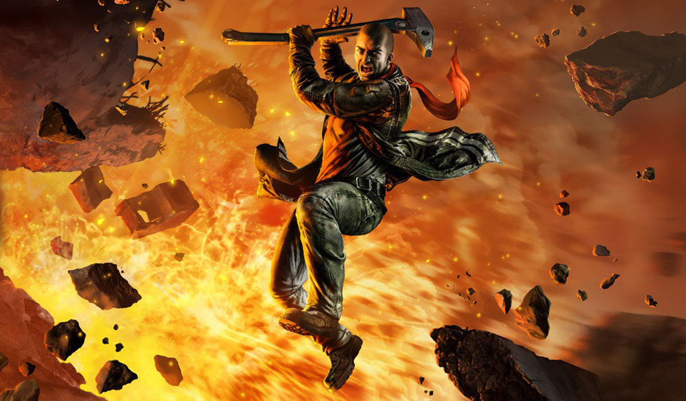

Retrospectiva săptămânii 1-7 iulie 2018
Retrospectiva săptămânii este rubrica duminicală în care trecem în revistă evenimentele săptămânii de pe frontul de gaming: știri şi articole (scrise de alții, bineînțeles, că e mai ușor aşa), industrie, lansări, oferte de jocuri, toate numai de savurat la cafeaua de duminică dimineața. (Și la care oricine poate contribui. 1 )
Ştiri
- Valve au publicat topul celor mai vândute și jucate jocuri de anul ăsta (Steam, Gamasutra)
- Tot de la Valve, dar fără voia lor de data asta, apar niște cifre interesante legate de numărul total de jucători unici (respectiv cumpărători) pentru jocurile care au achievements (Ars Technica, RPS, Eurogamer, GamesIndustry.biz)
- Summer Games Done Quick a strâns cea mai mare sumă din donaţii pentru caritate din istoria evenimentului: 2,1 milioane de dolari (Gamasutra)
- Ubisoft vor să renunţe la “experienţele de sine stătătoare” (Gamasutra)
- Doi scenarişti din echipa Guild Wars 2 au fost concediaţi după o dispută încinsă pe Twitter cu un fan (Game Informer, GamesIndustry.biz)
- Fred Wester părăseşte poziţia de CEO al Paradox după 15 ani. În luna dinaintea plecării a început să publice o serie de tweets în care dezvăluie momente amuzante din istoria companiei. Kotaku a adunat o parte dintre ele
Articole (critică, dev, design)
- From pen and paper to Dying Light 2 - Chris Avellone wants to flip the RPG script (VG247)
- AI achieves "human-level performance" in Quake III Arena (GamesIndustry.biz)
- 10 Real-Life Activities I Only Enjoy In Video Games (Game Informer)
- The European TV channel making documentaries with video games (GamesIndustry.biz)
- Making the most of voice talent (GamesIndustry.biz)
Not-a-review
- I'm Glad I Started Playing The Witcher 1 Last (Kotaku)
- Where are the Radical Politics of Cyberpunk? (Waypoint)
- 'Vampyr' is a Deeply Flawed Game, But That's Exactly Why It's So Memorable (Waypoint)
- The Ticking Clock in Cultist Simulator (Unwinnable)
Istorie
- How StarCraft and Shower Epiphanies Influenced Diablo 2’s Design (Gamasutra)
- 12 years ago Rockstar served up the antithesis of GTA, and it was amazing (Eurogamer)
- The Future of Halo: From Monkey Nuts to Infinity (Gamasutra)
- How Harlan Ellison’s Most Famous Short Story Became An Amazing Video Game (Kotaku)
Design, world-building
- Telling a great road trip tale without words in Far: Lone Sails (Gamasutra)
- How one person created the lushly organic world of Ghost Of A Tale (RPS)
- What Works And Why: Juicy maths in Slay The Spire (RPS)
- The Story Behind Ultima’s Morality (Kotaku)
Made în România
- GamesIndustry.biz le-au luat un interviu celor de la Breadcrumbs Interactive despre jocul lor Yaga, care a câștigat competiția Nordic Discovery. (GamesIndustry.biz)
- Dacă sunteți curioși cum arată piața de indie gaming în România și ce rol poate avea un incubator, aruncați un ochi pe AMA-ul susținut de Catalin Butnariu, unul dintre fondatorii Carbon Incubator (Gray Dawn a fost lansat cu ajutorul lor), pe Discord (Discord)
Anunţuri şi lansări de jocuri
Anunţate
- Dakar18 va fi lansat pe 11 septembrie 2018 (trailer)
- Devotion, un joc horror first person de la dezvoltatorii taiwanezi ai lui Detention (trailer)
- AI: The Somnium Files, un nou adventure de la creatorul seriei Zero Escape (Destructoid, Eurogamer)
- This is the Police 2 se lansează pe 2 august (Destructoid)
Lansate
- 3 iulie: Red Faction Guerrilla Re-Mars-tered (Steam)
- 5 iulie: From the Ashes, un DLC pentru Kingdom Come: Deliverance (Steam)
- 6 iulie: Dungeon Warfare II (Steam)
- 7 iulie: AirMech Wastelands (Steam)
Oferte jocuri
Humble Bundle
- A Hat in Time, The Escapists 2 și Conan Exiles sunt early unlocks pentru următorul Humble Monthly. Le puteți lua cu 12$, urmând ca peste 26 de zile să primiți și alte jocuri în acest pachet.
- Este în desfășurare DRM Freedom Sale pentru încă două zile. O mulțime de jocuri indie sunt la reducere, printre care SOMA la cel mai mic preț de până acum (4,19 €), Hollow Knight (9,89 €), Into the Breach (10,39 €), Undertale (4,49 €), Prison Architect (6,49 €), The Curious Expedition (9,74 €) sau Doorkickers (2,84 €).
Steam
Summer Sale s-a încheiat, dar reducerile nu se opresc cu totul:
- Rocket League are o reducere de cu 50% (9,99 €) și este free to play pentru restul acestui weekend.
- Alte reduceri notabile: seria Red Faction (19,80 €), The Witness (11,09 €), Bulletstorm: Full Clip Edition (9,25 €), Life Goes On: Done to Death (1,99 €) și Road Redemption (9,99 €).
gog.com
- Reduceri la Banished, Mount & Blade, Expeditions: Viking, Stronghold și multe altele în această promoție medievală.
- Tot în acest weekend e valabilă și o promoție horror la care puteți lua printre altele Vampire the Masquerade: Bloodlines & Redemption, Shadowman, Sanitarium, The 7th Guest și seriile Alone in the Dark, Phantasmagoria, Outlast, Penumbra și Amnesia.
- Mai e încă în vigoare și promoția săptămânală, care cuprinde diverse jocuri vechi precum Bad Mojo Redux, I Have No Mouth And I Must Scream, Fragile Allegiance, seria System Shock, dar și unele mai noi precum Devil Daggers, Oriental Empires, sau Kim, un adventure în genul lui 80 Days plasat în India de secol XIX a lui Rudyard Kipling.
Altele
- Pe Fanatical, seria Commandos + Praetorians + Imperial Glory sunt disponibile pentru 1 euro în acest bundle.
- Indie Gala vă propune Steel Division: Normandy 44 la un preț $10.49 pentru încă o zi.
Recomandarea săptămânii: Red Faction Guerrilla Re-Mars-tered

Un joc pe care probabil că îl aveți cu toții, Red Faction: Guerilla tocmai a primit un facelift și o relansare săptămâna aceasta. Upgrade-ul include texturi refăcute, rezoluții 4K, umbre, lumini și efecte noi, și e gratuit pentru posesorii lui Red Faction: Guerilla.
Pe lângă setting-ul care acum e din ce în ce mai folosit, planeta Marte, jocul iese în evidență prin nivelul de distrugere pe care îl puteți cauza în mediul înconjurător, practic neegalat până acum într-un joc open-world. Dacă l-ați jucat înainte, merită să mai dați o tură, iar pentru cei care nu l-au jucat, e ocazia ideală.
Câteva impresii despre ediția relansată: PC Gamer, RPS, o comparație video între ediția originală și cea nouă, plus review-ul din Level despre jocul original.
Dacă nu-l aveți, îl puteți cumpăra de pe Steam, Humble sau gog.com.
- Dacă ai citit vreun articol sau vreo știre interesantă și crezi că merită inclusă în retrospectiva săptămânii, te așteptăm cu recomandarea ta pe forum, pe unul din topicurile dedicate: Știri, Articole, Gaming România, Oferte jocuri [return]